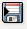
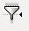
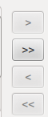
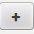
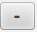

Activitats
Creació de l'estructura d'una taula
L’objectiu d’aquesta activitat és aprendre a crear l’estructura d’una taula que anomenareu Clients i serà la que utilitzareu de fil conductor en el vostre aprenentatge.
Un cop descrita la teoria bàsica sobre taules, camps i tipus en LibreOffice Base disposeu de la informació suficient per crear la vostra primera taula, destinada a guardar les dades de tots els clients d’una empresa. Seguiu aquests passos:
1. Obriu una base de dades existent o creeu una nova base de dades.
2. Fixeu-vos en el marge esquerre de la finestra de LibreOffice Base i feu clic sobre l’element anomenat Taules.
3. A la seccó Tasques, seleccioneu Crear taula en vista disseny.
4. Un cop a la finestra de disseny, feu clic al primer camp i escriviu IdClient.
5. Utilitzeu la tecla Tab per passar a la següent columna en la qual triareu el tipus de dada per al camp. El petit botó situat a la dreta permet desplegar la llista de tipus, tal com mostra la figura.
6. En aquesta llista, trieu el tipus Integer [INTEGER] per al camp IdClient.
7. Un cop determinat el tipus a la columna Descripció podeu escriure el següent text: Número que identifica el client.
8. Ara heu de baixar la mirada i fixar-vos en les propietats del camp. Aquí ens interessa sobretot la propietat Entrada requerida que heu d’establir a Sí. Amb aquesta acció fem obligatori introduir un número de client per no tenir problemes a l’hora d’identificar cada client. La resta de propietats les podeu deixar tal com estan. A la figura podeu comprovar l’aspecte de la finestra de disseny després d’haver-hi afegit el vostre primer camp.
9. Seguint el mateix procediment, afegiu la resta de camps de la taula segons les indicacions que teniu a continuació. El camp IdClient no cal tornar a crear-lo i pel que fa a les propietats, per ara amb les opcions per defecte serà suficient.
Per desplaçar-vos entre les columnes Nom del camp, Tipus de camp i Descripció podeu utilitzar la tecla Tab, els cursors o fer clic sobre la cel·la que voleu omplir.
10. Un cop acabada la definició dels camps de la taula l’aspecte de la finestra de disseny ha de ser similar al que mostra la figura.
11. Un cop afegits tots els camps, el següent pas serà desar l’estructura de la taula que heu creat. Seleccioneu Fitxer / Desar o feu clic sobre la icona Desa situada a la barra d’eines per mostrar el quadre de diàleg Desa.
- 
- Icona Desa
12. A la vostra primera taula l’anomenareu Clients. Immediatament després de fer clic sobre el botó Acceptar apareix una finestra d’avís per advertir-vos que no heu definit cap clau primària (figura). Fins que no ho feu no podreu introduir dades a la taula. Per aquest motiu, triareu Sí.
Creareu la següent taula amb els camps i propietats segons el model taula
| Nom del camp | Tipus de camp | Entrada | Longitud | Descripció |
|---|---|---|---|---|
| IdClient | Enter [INTEGER] | Sí | Número per identificar cada client | |
| Nom | Text [VARCHAR] | No | 50 | Nom de client |
| Cognoms | Text [VARCHAR] | No | 50 | Cognoms de client |
| Adreça | Text [VARCHAR] | No | 150 | Domicili |
| Població | Text [VARCHAR] | No | 150 | Població de residència |
| Província | Text [VARCHAR] | No | 50 | Província |
| Telèfon | Text [VARCHAR] | No | 13 | Telèfon de contacte |
| DataNaixement | Data[DATE] | No | Format: xx/xx/xx | |
| Correu electrònic | Text [VARCHAR] | No | 50 | |
| Observacions | Memo [LONGVARCHAR] | No | 200 | Indicacions de la forma de pagament |
| DataAlta | Data[DATE] | No | Format: xx/xx/xx | |
| Edat | [Tinyint] | No | 2 | |
| Categoria | Sí/NO[Boolean] | Client esporàdic o assidu | ||
Amb el teclat, podeu desar els canvis CTRL + S.
Definició d'un camp com a clau principal
L’objectiu d’aquesta activitat és aprendre a crear una clau principal en un camp.
Triareu un camp ja definit i que teniu la certesa que no es repetirà, en el vostre cas serà el camp IdClient.
En l’activitat anterior heu contestat a l’últim pas que Sí. Voleu crear un camp clau i segurament us ha aparegut un camp nou ID. Podeu veure la imatge del camp clau assignat pel sistema (figura).
Això és causat pel propi sistema ja que si deseu una taula sense camp clau o havent contestat No, quan obriu de nou la taula no us deixaria introduir registres. Podeu veure en la figura, figura, figura, figura i figura el resultat de la situació plantejada.

Com podeu observar en la figura i en la figura, l’edició de la taula presenta una diferència important: en el primer cas podreu introduir informació, mentre que en en la segona imatge, l’edició és inaccessible.
Els passos a seguir són:
1. Obriu la taula Clients en la vista Disseny. Feu-hi clic amb el botó dret i seleccioneu el comandament Edita.
2. Immediatament apareixerà la finestra de Disseny de taula que ja coneixeu. A continuació, feu clic amb el botó dret a l’espai situat a l’esquerra del camp IdClient i al menú emergent que apareix seleccioneu Clau primària com podeu veure a la figura.
3. Al costat del camp modificat apareixerà una icona representant una petita clau, tal com mostra la figura.
També podeu observar que ha desaparegut la propietat Entrada requerida, ja que a partir del moment en què un camp és clau, és obligatori omplir aquesta dada per poder afegir els registres a la taula.
4. Per acabar, deseu els canvis realitzats.
La forma de seleccionar més d’un camp és mantenir premuda la tecla CTRL mentre feu clic a l’espai situat a l’esquerra del camp.
Arribats a aquest punt i un cop definida la clau primària ja podríeu introduir dades a la vostra taula. Feu doble clic sobre la taula i s’obrirà en el mode d’edició de dades.
Si necessiteu utilitzar més d’un camp per compondre la clau d’una taula, serà suficient si seleccioneu en primer lloc els camps que voleu utilitzar per després fer clic amb el botó dret i triar l’ordre Clau primària.
Introducció de dades en una taula
L’objectiu d’aquesta activitat és aprendre a introduir dades en una taula. Com a punt de partida utilitzareu la base de dades de l’última activitat en la qual heu creat la taula Clients.
Els passos a seguir per desenvolupar aquesta activitat són:
1. Comproveu que l’objecte Taules es troba seleccionat al marge esquerre i després, feu doble clic sobre el nom de la taula per obrir-la en el mode Introducció de dades. L’aspecte de la finestra serà similar al que mostra la figura.
2. El cursor es mostrará al primer camp del primer registre. Només cal començar a escriure les dades perquè apareguin en els diferents camps. Podeu desplaçar-vos al llarg del registre amb les tecles de cursor, amb el tabulador o prement la tecla Retorn.
3. Escriviu uns 20 registres aproximadament per veure el correcte funcionament de la taula.
4. És convenient que repetiu algunes dades de Poblacions , Províncies, IdCategoria, ja que això us permetrà treballar les pràctiques posteriors.
Per escriure la data de naixement podeu introduir les dades separades per guions, barres de divisió o per punts, i Base s’encarregarà d’adaptar els valors al format admès pel programa. Observeu la figura.
Cerca de dades en una taula
L’objectiu d’aquesta activitat és aprendre a cercar informació concreta en una taula.
A la base de dades
- Amb la taula Clients en el mode vista de dades, feu clic a la icona de recerca de dades.
- Per defecte apareixerà activada l’opció Text. Escriviu-hi el terme de cerca Reus.
- A la secció Àrea, activeu el botó d’opció Camp individual i trieu de la llista el camp Població.
- En executar la cerca, apareix ressaltat el primer registre que contingui alguna dada coincident amb el criteri de cerca.
A més, a la part inferior de la finestra de cerca hi apareixerà el número del registre en el qual s’ha trobat aquesta primera coincidència, tal com podeu veure a la figura. Podeu avançar al llarg de tota la taula a mesura que torneu a fer clic al botó Cercar fins que s’acabin les coincidències.
Proposem que feu unes cerques més per consolidar aquest punt:
- Imagineu que necessiteu contactar per telèfon amb el client amb cognoms Melis Miquel.
- Cerqueu els clients que es diuen Rita de nom ja que voleu felicitar-les pel seu sant.
- Feu una cerca dels clients que tenen una r en el nom de la seva província. Si feu correctament aquesta última cerca, Lleida no ha de sortir destacada.
Ordenació de dades
L’objectiu d’aquesta activitat és aprendre a ordenar els registres d’una taula.
Proveu d’ordenar els registres de la taula Clients per província, després per població i finalment per cognoms.
Segurament heu fet l’ordenació separadament però també podeu intentar fer-ho indicant a Base els tres criteris a la vegada. La finestra per establir les condicions de l’ordenació la teniu a la figura
Filtrat de registres
L’objectiu d’aquesta activitat és aprendre a filtrar els registres d’una taula.
Els passos a seguir són:
- Utilitzeu la base de dadesque proporcionem en l’activitat anterior i obriu la taula Clients en el mode de vista de dades. Recordeu que és suficient amb fer doble clic sobre el nom de la taula.base2.zip ( 5.8 KB )
- Seleccioneu algun registre en el qual el valor per al camp Categoria sigui 1.
- A continuació feu clic al botó Filtre automàtic.
- A la finestra de dades de la taula només hi apareixeran aquells registres corresponents als clients que tenen la categoria 1, tal com mostra la figura.
- 
- Botó Filtre automàtic
Podeu veure el resultat del filtre que acabeu d’aplicar a la figura.
Creació de taules amb l'assistent
L’objectiu d’aquesta activitat és aprendre a crear una taula utilitzant l’assistent de creació de taules.
Primer pas
1. Obriu la base de dades
2. De les dues categories disponibles, triareu Negocis per seguir aquesta activitat.
3. A continuació, a la llista desplegable Taules de mostra seleccioneu el model denominat Productes.
4. Dins de la secció Camps disponibles trobareu els camps predefinits per aquest model.
En aquest cas, la nostra intenció és crear una taula amb les dades dels productes que comercialitzeu, de manera que heu de triar els camps següents: IdCategoria, IdProducte, Descripció, PreuUnitat, DataAlta, Observacions.
Feu doble clic a cada camp o utilitzeu el botó per passar-los tots.
- 
- Botó Camp disponible
En aquest punt, l’aspecte del quadre de diàleg ha de ser el que mostra la figura.

Si us equivoqueu en desplaçar algun camp o la totalitat, podeu tornar a la finestra d’origen fent clic als botons.
Podeu afegir camps procedents d’altres models de taules.
Només cal triar una opció diferent a la llista Taules de mostra i seleccionar els camps que desitgeu. Quan tingueu escollits tots els camps que utilitzareu, premeu el botó Següent per continuar amb l’assistent.
Segon pas
5. En aquest pas de l’assistent que podeu veure a la figura, Base ofereix la possibilitat de modificar les propietats de cada un dels camps seleccionats i fins i tot afegir nous camps creats per vosaltres mateixos mitjançant el botó
- 
- 
Aprofiteu aquest pas de l’assistent per canviar el nom del camp Descripció per simplement Nom i de la mateixa manera canvieu IdProducte per Referència conservant la resta de valors tal com vénen definits en el model. En les propietats del camp IdProducte (ara Referència) assignareu Sí a la propietat Valor automàtic.
Finalment, assigneu la tipologia Enter [INTEGER] al camp IdProducte . Això us servirà per vincular el codi de cada article a la categoria a la qual pertany cada article.
El resultat de les modificacions el teniu a la figura
Tercer pas
6. Feu clic al botó Següent i passeu a la següent finestra de l’assistent. Haureu d’establir la clau principal de la vostra taula i per això teniu tres possibilitats:
- Si trieu autovalor, Base afegeix un nou camp que actuarà com a clau i el valor s’incrementarà automàticament cada vegada que inclogueu un nou registre.
- Una altra possibilitat és triar un dels camps ja existents a la taula.
- Com a última opció, us queda triar una combinació de camps que serveixi per identificar de forma inequívoca cada un dels registres de la taula.
7. En l’exemple triat teniu un camp candidat perfecte per ser clau de la taula. Es tracta del camp IdProducte anomenat Referència. Després d’activar la seva propietat Valor automàtic serà el propi programa el que s’encarregui d’afegir un nou valor únic a aquest camp cada vegada que s’afegeixi un registre a la taula.
Per tant, seleccioneu la segona de les opcions i en la llista desplegable Nom del camp trieu el camp segons les vostres necessitats, tal com podeu veure a la figura.
Activar la casella de verificació d’autovalor té el mateix efecte que utilitzar la propietat Valor automàtic de les propietats del camp. En aquest cas apareix activada, atès que ja heu configurat aquest aspecte en el pas anterior.
Últim pas
8. Després de fer clic a Següent arribeu a l’última finestra de l’assistent en el qual heu d’assignar un nom a la taula que, en aquest cas, anomenareu Productes (figura). A partir d’aquí disposeu de tres opcions:
- Inserir dades immediatament.
- Modificar el disseny de la taula.
- Crear un formulari basat en aquesta taula.
Seleccioneu-ne la segona per comprovar el treball realitzat per l’assistent.
Introduireu els articles que comercialitzeu i que podeu trobar al fitxer
Creació de taules des de la vista Disseny
L’objectiu d’aquesta activitat és aprendre a crear una taula utilitzant la vista Disseny.
La vostra base de dades d’exemple és incompleta. Necessiteu afegir-hi almenys una taula: Factures. Utilitzeu com a punt de partida la base de dades
Per a la correcta realització d’aquesta activitat cal tenir en compte el següent:
- L’assistent no seria una bona opció per dissenyar aquesta taula. És per això que recomanem que utilitzeu la vista Disseny i tot l’après fins ara.
- Cal tenir cura a l’hora d’establir la clau primària de la taula, ja que un cop desada la taula no és possible modificar-la. Els camps clau que cal establir en cada cas es troben ressaltats en negreta i identificats com a tals en la Descripció.
- Recordeu-vos d’evitar els accents i els espais en els noms dels camps.
Descrivim la taula que heu de dissenyar en aquesta activitat amb els seus camps, tipus i combinacions de claus.
Taula Factures Creareu a una taula per recollir la informació de les comandes (vegeu la taula). Cada comanda genera una factura nova.
| Nom del camp | Tipus de camp | Entrada | Descripció i Propietats |
|---|---|---|---|
| Factura | Enter [Integer] | Sí | Núm. de factura. CAMP CLAU. Indexat sense duplicats |
| Data | Data [DATE] | No | Sense indexar |
| Quantitat | Nombre [NUMERIC] | No | Sense indexar |
| Client | Nombre | Sí | Indexat amb duplicats |
| Codi Producte | Nombre | Sí | Sense indexar. Permet duplicats. Ref. article |
| Import | Nombre [NUMERIC] | No | Import de la factura. Sense indexar |
| Cobrada | SÍ / NO [BOOLEAN] | No | Determina si la factura ha estat abonada o no |
Relacions entre dues taules
L’objectiu d’aquesta activitat és crear una relació entre dues taules.
Per completar correctament aquesta activitat suggerim que utilitzeu la base de dades
Vegem a la següent activitat els passos necessaris per establir relacions en LibreOffice Base. Més concretament, l’objectiu d’aquesta activitat és crear la primera relació entre les taules Clients i Comandes.
Els passos a seguir són:
1. Des de la finestra principal de Base, executeu la comanda Relacions al menú Eines per mostrar la finestra Disseny de relació.
- Botó Afegir taula
2. Com que encara no hi ha definida cap relació, Base mostrarà per defecte el quadre de diàleg Afegeix taules. Si per algun motiu no apareix aquest quadre de diàleg, utilitzeu el botó en la mateixa finestra. Per començar, feu doble clic sobre la taula Clients i sobre la taula Comandes (figura).
3. A la finestra Disseny de relació apareixeran les dues taules juntament amb tots els seus camps. Feu clic al botó Tanca del quadre de diàleg Afegeix taules.
4. A continuació establiu la relació entre el camp IdClient de la taula Clients i el camp IdClient de la taula Comandes. Per fer això, feu clic al camp IdClients de la taula Clients i sense deixar-lo anar, arrossegeu fins caure sobre el camp IdClient de la taula Comandes. Apareixerà una línia que unirà tots dos camps, indicant que s’ha establert la relació (figura).
Al costat d’IdClient apareix un 1 i una petita n que indiquen que es tracta d’una relació un a molts en què cada client realitza moltes comandes, però una comanda tan sols pot fer-la un client.
5. A continuació heu d’establir la resta de relacions de la vostra base de dades. Si no us trobeu en la finestra de relacions, trieu el menú Eines i seleccioneu la comanda Relacions. A continuació, feu clic a la icona Afegeix taules.
6. Afegiu totes les taules disponibles i, quan acabeu, feu clic al botó Tanca del quadre de diàleg Afegeix taules.
7. Establiu les relacions segons el resultat que podeu comprovar a la figura.
8. Podeu fer clic sobre el títol de qualsevol de les taules i moure-us fins a la posició que vulgueu dins de la finestra de relacions. Aquest aspecte és sobretot per comoditat i per millorar visualment la comprensió de l’esquema de relacions.